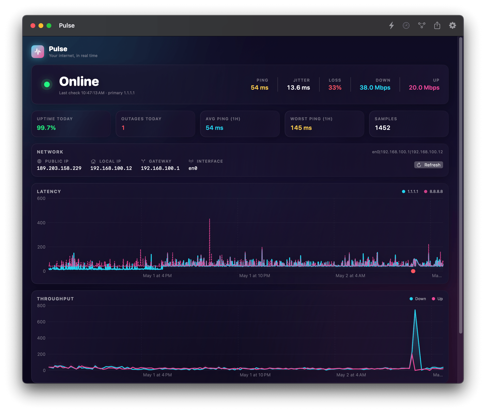
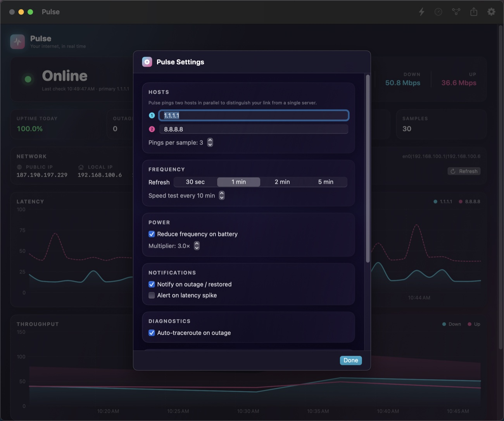

Multi-host monitoring
Cloudflare and Google in parallel by default. Configurable. Distinguishes a flaky link from a flaky destination.
A menu bar monitor that tells you the truth. Continuous ping, jitter, packet loss and outage tracking — with auto-traceroute the moment things break, and a dashboard you'll actually open.
Pings every 30s–5m. Lives in the menu bar so you see status at a glance, never in the way.
Two hosts pinged in parallel so you can tell your link from that one server. Jitter and packet loss baked in.
Every outage is logged with a traceroute, ready to export as a CSV that ends the "looks fine on our end" conversation.
The dashboard
Glassy gradient cards. Live status hero. Branded charts with gradient fills. The throughput shows your last networkQuality run, the latency trend shows both monitored hosts, and the outage panel shows the truth about last night.

Features
Cloudflare and Google in parallel by default. Configurable. Distinguishes a flaky link from a flaky destination.
Each cycle fires N pings, computes mean / min / max / standard deviation / packet loss. Configurable count.
macOS's built-in networkQuality — no third-party server required. Down/up + responsiveness (RPM).
Every drop logged with start, end, duration, network fingerprint. Auto-traceroute attached at the moment of break.
Public IP, local IP, gateway, interface — and Apple-style captive-portal detection that warns before you waste 5 minutes wondering.
Cadence backs off automatically when you unplug. Configurable multiplier. Live indicator in the header.
Outage start & restored. Latency-spike alerts with a configurable threshold and 5-minute cooldown so you don't get spammed.
Full history — pings, outages, speed tests — in one CSV. Send it to your ISP. Ends the conversation.
Run Speed Test, Get Latest Ping, Check If Online — wire it into automations, hot keys, Stream Deck.
Settings
Pick your hosts, pick your cadence, pick your alerts. Pulse remembers everything in plain JSON in ~/Library/Application Support/Pulse, so backing up your preferences is just copying a folder.

Specs
networkQuality1.1.1.1 / 8.8.8.8~/Library/Application Support/Pulse/Install
Pulse is a tiny Swift Package. The build script picks up Xcode's toolchain, compiles, generates the icon, bundles the .app and ad-hoc signs it.
# Clone & build
git clone <this repo>
cd pulse
./build.sh
# Launch
open Pulse.app
# Optional: install to /Applications
cp -R Pulse.app /Applications/Requires macOS 13+ and Xcode (the Command Line Tools alone are missing the SwiftPM ManifestAPI). First launch may need a right-click → Open since the binary is ad-hoc signed.